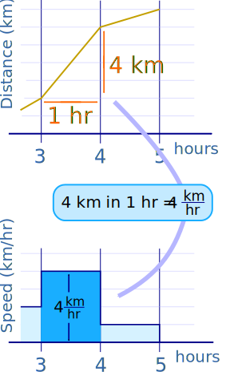
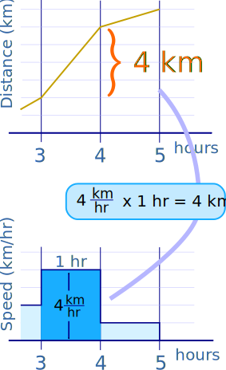

Graphical Intro to
Derivatives and Integrals
Derivatives and Integrals have a two-way relationship!
Let's start by looking at sums and slopes:
Example: walking in a straight line
- Walk slow, the distance increases slowly
- Walk fast, the distance increases fast
- Stand still and the distance won't change
- Walk backwards, and you get closer to the start!
Walking at 4 km per hour for 1 hour makes the diistance increase by 4 km
A distance increase of 4 km in 1 hour gives a speed of 4 km per hour
Change in distance is the sum of the speed over time
Speed is the rate of change (slope) of distance
It will make more sense if you play with it below (drag the distance line at the top or the speed line below to see the other change):
Play with that a little and get comfortable with the two-way relationship. Try zero speed, or negative speed.
The slope of the distance line gives us the speed line, like this:

The "area" under the speed line gives us the increase in distance, like this:

Many things have that same two-way relationship:
- Wealth and income
- Volume and flow rate
- Energy and power
- lots more!
Here is the same app as above, but you can choose different topics:
Integrals and Derivatives also have that two-way relationship!
Try it below, but first note:
- Δx (the gap between x values) only gives an approximate answer
- dx (when Δx approaches zero) gives the actual derivative and integral*
*Note: this is a computer model and actually uses a very small Δx to simulate dx, and can make erors.
For true derivatives refer to Derivative Rules, and for integrals refer to Introduction to Integration